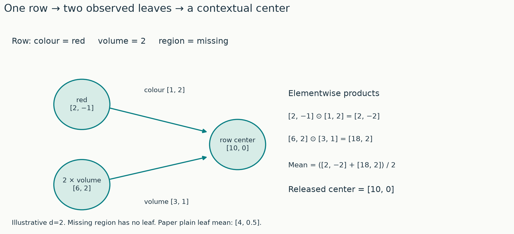
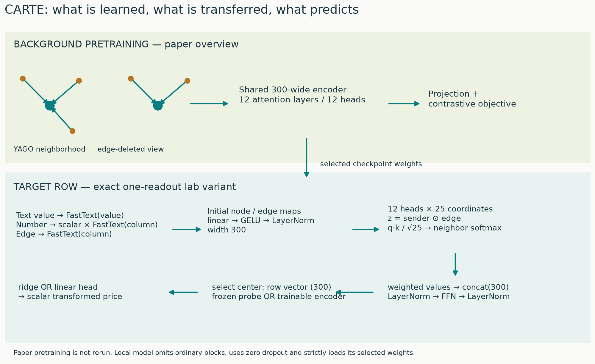
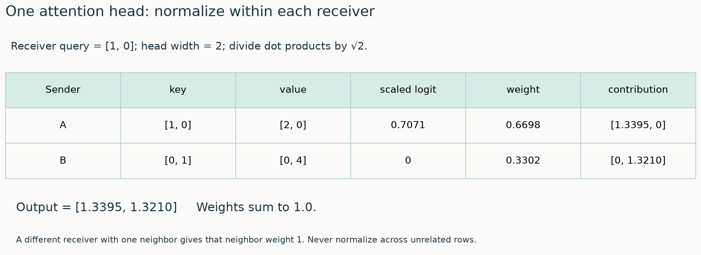
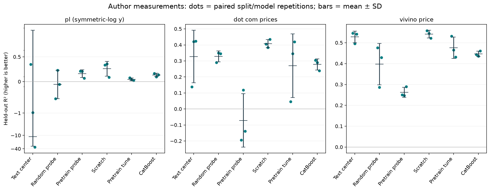
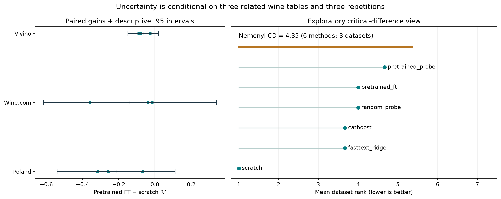

Year 2 · Quarter 4 · Lesson 074
CARTE: transfer across table schemas
Encode the row → trace the message → transfer the parameters → measure the gain.
Before reading: retrieve the boundary¶
Close the previous lesson. Write three short answers: What comparison isolates pretraining from architecture? Which rows may fit a numerical transform? Why can a positive gain at one label budget fail at another? Keep your answers, then complete the spaced warm-up.
Your tangible win. Given a row from a table with unfamiliar columns, draw the graph CARTE consumes, trace how column meaning changes one message, and design a fair test of whether a pretrained encoder helps a small target table. The companion lab makes you implement graph construction, attention normalization and validation-only probe selection.
The route is row → typed messages → shared encoder → target prediction → transfer audit. Allow one focused reading session and a separate lab session. Ask the tutor about any step you cannot reconstruct; bring your graph and intermediate values.
1. The unresolved question from Lesson 73¶
Lesson 73 held one table's feature representation fixed while changing the amount of supervision. Its central comparison was the same network with and without self-supervised pretraining. That experiment leaves another problem: how can parameters learned on one collection of columns accept a different collection?
A schema describes the columns of a table, including their names and types. A network whose first layer takes [age, income, city] cannot directly interpret [winery, rating, country, vintage]: the number and meanings of its input coordinates have changed. Padding the shorter row solves the length problem but leaves the meanings unspecified.
Schema matching explicitly determines which columns across sources correspond. Entity matching explicitly determines which records or names refer to the same real-world thing. Both can be valuable, and both can be expensive or ambiguous. For example, country and nation might correspond; two wines with nearly identical names might still be different vintages.
In plain terms. CARTE turns each observed cell into a value paired with a description of its role. A shared graph encoder reads any number of such pairs. The learned parameters no longer have one separate input position for every column in every table.
CARTE expands to Context Aware Representation of Table Entries. Read the paper, especially Figures 1–3 and Sections 3.1–3.3. Keep the pinned released model open for the implementation audit. We will separate the model's ability to accept a schema from evidence that useful knowledge transfers to it.
2. Turn one row into a small graph¶
Values and roles have separate vectors¶
An embedding is a numerical vector representing an input such as a string. FastText represents words using learned word and character-subword information; the released CARTE converter uses its sentence-vector operation for strings. The input dimension is 300. This operation accepts new strings, although semantic quality depends on language, spelling and domain. See the FastText documentation and the actual converter.
A node holds a value vector. An edge connects two nodes and holds a relation vector. In a row graph, the relation describes the column. The center is an extra node representing the entire row; each observed cell is a leaf, a node attached to that center. This is a star graph. A graphlet here means this small local graph, not a new database table.
For a text cell, use the embedding of its value as the leaf vector. Use the embedding of its column name as the edge vector. For a numerical cell, first transform its scalar value using statistics fitted on training rows. Multiply that scalar by the column vector to obtain its leaf vector. Thus a number's representation carries its role: a rating of 4 and a volume of 4 need not have the same vector.
A missing value contributes no leaf. A zero contributes a leaf with a zero numerical vector and a present relation. Missing and zero therefore give different graph structures. If every value is missing, the mean used for the center is undefined. Our lab raises an error so the application must choose and document a fallback.
Worked example: distinguish two means¶
Use a two-dimensional teaching embedding, independent of the real 300-dimensional FastText cache. Let colour → [1, 2], red → [2, −1], and volume → [3, 1]. The row contains colour=red, transformed volume=2, and a missing region.
The leaves are [2, −1] and 2 × [3, 1] = [6, 2]. The paper's plain leaf average is [4, 0.5]. The pinned released converter instead averages edge-conditioned leaves: [1, 2] ⊙ [2, −1] = [2, −2] and [3, 1] ⊙ [6, 2] = [18, 2]. Its center is [10, 0]. The symbol ⊙ means coordinate-by-coordinate multiplication. The drawing focuses on messages entering the center; the executable graph additionally includes leaf self-messages with an all-ones relation vector.

Source audit. Paper Section 3.1 describes the center as the leaf mean. The pinned converter computes
Z = edge_attr * x[edge_index[1]]and averages the messages addressed to node 0. The lab follows this released computation. We retain both values above so the implementation choice is explicit.
Predict what happens when volume becomes missing, then use the control. Also predict what happens when the same volume is assigned a different column vector. The toy vectors expose arithmetic; they do not claim to encode real linguistic similarity.
Graph dimensions. With two observed cells, there are three nodes. The release converter creates two leaf-to-center messages plus one self-message per leaf, so its index tensor has shape 2 × 4. Node and edge feature matrices have shapes 3 × 300 and 4 × 300. In this code, the first row of the index tensor names the receiver; the second names the sender. Read these roles from the actual indexing operation rather than assuming a library convention.
3. Model architecture: follow the entire solution¶
From background facts to target rows¶
Pretraining learns reusable parameters before target labels are used. CARTE's background source is YAGO, a knowledge graph containing triples such as (Louvre, located in, Paris). A triple has a subject, relation and object. Its local neighborhoods can be represented with node and relation vectors of the same dimensions as the row graphs.
For pretraining, a neighborhood can extend two hops: one hop traverses one relation edge, and two hops reach a neighbor of a neighbor. This background graph contains richer structure than the one-row stars used downstream.
Two views of an entity graph provide a positive pair. One view removes a random subset of edges. Other entities in the batch provide negative examples. A contrastive objective trains representations of the positive pair to agree while distinguishing other examples. Recall Lesson 72: changing the view-construction rule changes which variations the representation learns to tolerate.
For a similarity score s, a temperature τ > 0, anchor a, and positive p, the generic InfoNCE form is −log(exp(s(a,p)/τ) / Σ_b exp(s(a,b)/τ)). The denominator contains the positive and eligible negatives; the anchor itself is excluded. Deleting edges teaches partial-context consistency. It does not automatically teach every synonym or unit conversion.

Read the upper lane. Background graphlets share the encoder. The paper's pretraining stack has 12 attention layers, 12 heads and width 300. An output projection supplies the contrastive objective. Parameters, not the sampled background graphlets, move to downstream prediction.
Read the lower lane. A target row becomes a star graph. Separate learned linear maps, GELU activations and layer normalization transform node and edge inputs. A linear map mixes coordinates using learned weights. GELU is a smooth nonlinearity. Layer normalization centers and rescales coordinates within each node or edge, with learned scale and offset. These operations keep each input vector at width 300 in this implementation.
The lab uses the release's one-readout downstream configuration: initial maps → graph attention → node normalization → two-layer feed-forward network → node normalization → center selection. It uses 12 attention heads, each of width 25. Concatenating their outputs restores width 300. A readout extracts the center vector, giving one row embedding. The lab computes only those final center outputs during training; it still uses every observed leaf as an input message. The full forward pass remains visible, and output plus gradient checks verify that this execution shortcut preserves the model. A target head then turns that vector into a scalar prediction.
A frozen probe keeps encoder weights fixed and fits a target predictor on the embeddings. Fine-tuning updates the encoder as well as a new target head. Our frozen predictor is ridge regression; our fine-tuning predictor is a learned linear head. The feed-forward network (FFN) is a two-layer map applied separately to each node. An ensemble averages or otherwise combines predictions from multiple trained models. The paper's training and ensemble recipe differs, so compare matched local arms before making claims about the original benchmark.
Source audit. The pinned estimator uses
num_layers − 1ordinary blocks before its readout. Its defaultnum_layers=1therefore leaves zero ordinary blocks. It also renamesinitial_xcheckpoint keys before loading withstrict=False, leaving that input map uninitialized from the checkpoint. This lab deliberately loads all selected encoder keys strictly, includinginitial_x. Architecture parity is checked separately from this weight-loading choice. The source release's node block has no residual addition; we do not silently insert a standard Transformer residual.
Trace the load-bearing attention computation¶
In plain terms. Each cell sends a proposal to the center. The column vector changes that proposal before attention decides its weight.
Let x_j denote the sender's vector and e_ij the relation vector for the message from j to receiver i. First calculate z_ij = x_j ⊙ e_ij. Three learned matrices make a query, a vector describing what the receiver seeks; a key, a vector used to score a proposal; and a value, the content to be averaged:
q_i = W_Q x_i, k_ij = W_K z_ij, v_ij = W_V z_ij.
For one head of width d_h, its logit is q_i · k_ij / √d_h. A dot product multiplies corresponding coordinates and sums them. The square-root factor controls the growth of score magnitude with dimension. Softmax exponentiates these logits and divides by their sum over neighbors of the same receiver. The resulting weights sum to one for that receiver. The output is their weighted sum of the value vectors.
Worked example. Let the center query be [1,0], keys be [1,0] and [0,1], and values be [2,0] and [0,4]. The scaled logits are approximately [0.7071,0]. Their softmax weights are [0.6698,0.3302]. The output is approximately [1.3395,1.3210]. These numbers illustrate the attention kernel after projection, separately from the raw row-graph example.

A global softmax over every edge in a batch would let another row change these weights. The notebook CHECK includes a second receiver with only one neighbor; that neighbor must receive weight 1 regardless of the first receiver's scores. This is a useful failure test because a plausible-looking implementation can normalize over the wrong dimension.
Source audit. We use the sender vector, as the released model does in
x[edge_index[1]]. The paper's printed key/value equations use anisubscript; its accompanying discussion describes neighbors. The implementation and our index-role definition remove that ambiguity. Copied-weight output parity checks the whole local encoder, not just a hand-calculated softmax.
4. What transfers when columns change?¶
The model shares the transformations applied to every node, edge and message. It can process two cells today and eleven tomorrow without allocating eleven new feature-specific weight matrices. Column order also disappears from the representation: permuting whole leaf-edge pairs permutes intermediate leaf states while leaving the center readout unchanged, up to floating-point rounding.
Preserve the pairing. Permuting values while leaving edge labels fixed changes the facts represented by the row. That transformation should generally change the prediction. Reordering pairs and scrambling their alignment are different experiments.
Names still carry assumptions. Two meaningful column descriptions may have useful neighboring language representations. Two arbitrary codes may not. Renaming ABV to column_7 preserves its numeric values but changes the relation vector. The model needs no explicit matching table to run, yet its predictions can depend strongly on the quality of names and embeddings.
Units still matter. A numerical transform fitted separately on each training table removes some scale differences. It does not guarantee that centimeters, kilograms and currencies become semantically interchangeable. Type handling, target meaning and deployment distribution remain part of the prediction contract.
Three distinct transfer questions¶
| Setting | Source of reusable information | Target supervision | What our lab runs |
|---|---|---|---|
| Background pretraining → target | Released YAGO weights and FastText vectors | Small target train and validation sets | Yes, on three schemas |
| Labeled source table + target | Joint supervised fitting of related outcomes | Labels from both sources | Discussed, not run |
| Multiple source tables + target | Pairwise learners and their validation-weighted combination | Labels and target validation | Discussed, not run |
For supervised source-table transfer, compatible output meaning is essential. A common input representation alone cannot make two unrelated labels interchangeable. The paper's pairwise recipe mixes source and target rows during fine-tuning, monitors target validation, and combines pairwise and target-only learners using validation-based weights. Outcome transformations and source choice are part of that recipe. See Section 3.3.
The wine targets supplied with the released examples already contain transformed prices, and the transformations differ across sources. Our experiment preserves each source's released target and evaluates it separately. It does not pool those targets into one supervised regression problem. This is why you must inspect target units before attempting the next transfer setting.
5. A controlled experiment with real target tables¶
State the prediction before reading the measurements¶
The lab uses three real released tables: Wine Poland, Wine.com prices and Vivino prices. The column sets differ. Each table contributes 384 rows sampled without looking at target values after removing exact repeated entity names within that source. Sixty-four rows train the target predictor, 64 select its hyperparameters or epoch, and 256 score it. The split is repeated with three fixed seeds. Each arm receives identical rows for a given seed.
The full FastText binary is large. We extracted real 300-dimensional sentence vectors for the union of required strings into a compact portable cache. Computing a fixed pretrained vector for a held-out string does not fit on held-out labels or learn vocabulary statistics. The manifest records the binary hash, source row IDs, checkpoint hash and cache identity. Unknown strings outside this teaching cache require running the real string encoder; no zero or random replacement is supplied.
The source checkpoint and text model may have seen related public entities during their original training. That possible background overlap is not audited here. Exact name deduplication within these tables also does not resolve all real-world aliases. We test held-out sampled rows, not a guarantee of novel real-world entities or future vintages.
Know what each arm answers¶
| Arm | Fitted components | Question |
|---|---|---|
| FastText center + ridge | Train-fitted feature scaling and ridge | How useful are language-conditioned inputs alone? |
| Random encoder + ridge | Same probe; encoder stays random | What comes from architecture and a probe alone? |
| Pretrained encoder + ridge | Same probe; encoder stays pretrained | Do transferred graph weights help fixed embeddings? |
| Scratch encoder + head | Encoder and linear head | What can this architecture learn from target labels? |
| Pretrained encoder + head | Encoder and linear head | Does pretrained initialization help matched target training? |
| CatBoost | Fixed 150-tree recipe on native columns | Is a practical tabular baseline competitive? |
Numerical transforms fit on target training rows only. A column constant among its observed training values uses standard scaling instead of a fitted power transform. A column entirely missing in training is omitted everywhere for that split. This fallback was added after a constant-volume split produced a power exponent near 35 and float32 overflow; the final experiment reruns every arm under the same rule. Ridge selects among α = 1, 10, 100 on validation error; α controls the penalty on large coefficients. Fine-tuning and scratch use the same AdamW optimizer, learning rate 10⁻⁴, weight decay 10⁻³, 40 epochs, zero dropout and paired target-head initialization. Validation chooses the saved epoch. AdamW is a gradient-based update rule with adaptive coordinate step sizes and a separate weight-decay shrinkage term. An epoch is one pass through the labeled training rows; our small neural run uses all of them in one batch. Zero dropout means no hidden coordinates are randomly suppressed during these runs. Before neural training, target values are centered and scaled using the training target mean and standard deviation; predictions are converted back before scoring. Test scores never choose among these options. The tree recipe is fixed before evaluation.
The main metric is R², 1 − Σ(y − prediction)² / Σ(y − mean_test(y))². A perfect prediction scores 1. A negative score means greater squared error than using the held-out target mean as a constant oracle comparator. That denominator is part of the metric, not a predictor fitted on test labels. Comparisons within a dataset share the same test rows and denominator.
Author-reference R², mean ± sample SD across three seeds. These saved values are separate from your fresh notebook run.
| Method | Wine Poland | Wine.com | Vivino |
|---|---|---|---|
| fasttext_ridge | -11.361 ± 19.166 | 0.328 ± 0.164 | 0.528 ± 0.028 |
| random_probe | -0.056 ± 0.288 | 0.328 ± 0.034 | 0.397 ± 0.099 |
| scratch | 0.261 ± 0.150 | 0.408 ± 0.025 | 0.541 ± 0.018 |
| pretrained_probe | 0.162 ± 0.079 | -0.072 ± 0.167 | 0.262 ± 0.024 |
| pretrained_ft | 0.047 ± 0.028 | 0.270 ± 0.198 | 0.476 ± 0.051 |
| catboost | 0.134 ± 0.034 | 0.278 ± 0.035 | 0.446 ± 0.013 |
Observed pattern. Pretrained fine-tuning has higher mean R² than scratch on 0 of 3 targets. The frozen pretrained probe exceeds the frozen random probe on 1 of 3. These comparisons isolate different adaptation settings; neither count establishes broad superiority.
Paired fine-tuned pretrained minus scratch gains:
- wine_pl: -0.259, -0.317, -0.067; mean -0.215, descriptive t95 [-0.539, +0.110].
- wine_dot_com_prices: -0.359, -0.039, -0.015; mean -0.138, descriptive t95 [-0.615, +0.340].
- wine_vivino_price: -0.026, -0.079, -0.090; mean -0.065, descriptive t95 [-0.150, +0.020].
Exploratory dataset-balanced mean ranks (lower is better): fasttext_ridge 3.67, random_probe 4.00, scratch 1.00, pretrained_probe 4.67, pretrained_ft 4.00, catboost 3.67. Friedman p=0.221; Nemenyi critical difference=4.35. Only three related datasets contribute.

Read the per-seed points before the means. For the main initialization contrast, subtract scratch R² from fine-tuned pretrained R² within each seed. Averaging unpaired scores first hides whether a difficult split affected both arms. The notebook stores predictions so you can recompute each metric independently.
Scope check. These three datasets share a wine domain. Three overlapping split repetitions measure sensitivity within these datasets; they are not three independent new populations. The displayed standard deviations describe repetitions. The exploratory Friedman and Nemenyi calculations use one mean rank per dataset, not one dataset per seed. With only three related datasets and six methods, they support very limited inference.

A rank is a method’s position within one dataset, with rank 1 assigned to the highest mean R² and ties receiving averaged positions. The Friedman test evaluates whether methods have systematically different within-dataset ranks. Its p-value measures how unusual the observed rank differences would be under the test’s equal-performance null model. The Nemenyi comparison uses a critical difference: a threshold for a pair’s mean-rank separation that accounts for comparing multiple methods.
The paired interval uses mean gain ± 4.303 × sample SD / √3, with the Student-t multiplier for two degrees of freedom. Its assumptions are imperfect because repeated splits overlap. The critical difference is the Nemenyi threshold on average ranks under its dataset-level assumptions; it is larger than many plausible rank gaps with this small collection. Treat both as descriptive checks on the strength of the evidence.
What this run found¶
Pretrained fine-tuning has a lower mean R² than scratch on all three targets in this particular single-readout, linear-head recipe. Frozen pretrained embeddings improve over random embeddings on Wine Poland and trail them on Wine.com and Vivino. The initialization and frozen-representation questions therefore have different answers even within these related sources.
The raw language-conditioned ridge baseline has a large negative Wine Poland score in one repetition. The numerical fix guarantees finite inputs; it does not guarantee useful extrapolation beyond a constant training feature. The result table preserves that error. The Poland plot uses a symmetric-log vertical scale, linear near zero and compressed for large magnitudes, so both the failed run and the neural scores remain visible. Other panels use ordinary linear scales. This is a diagnostic observation, not a causal attribution to one column; establishing the cause would require a separately declared feature intervention.
The selected downstream depth, strict input-map transfer, head, training budget and lack of bagging all differ from the paper's full evaluation recipe. This local result is a reason to audit those choices in a follow-up; it cannot establish that published CARTE transfer gains are false.
Diagnose a gain or a failure¶
If frozen transfer helps but fine-tuning loses, inspect the selected epoch and optimization sensitivity. If both random and pretrained probes help similarly, the architecture or input language vectors may explain much of the gain. If a tree wins, preserve that result and ask which information or sample-size advantage the encoder has yet to demonstrate.
Pretraining consumes substantial historical compute even when a checkpoint is cheap to download. Target fitting receives 128 development labels in this experiment, including validation. A statement such as “64-label learning” must retain that validation cost. Model-selection effort and pretraining resources are different accounting dimensions.
6. Lab: implement, check, then interpret¶
Open the notebook using the links at the top. Its explanations and portable figures travel with it.
- TODO — construct a row graph. Omit missing cells, encode values according to type, build receiver/sender indices, and compute the release-specific center. CHECK the worked fixture and the all-missing policy.
- TODO — group attention by receiver. Implement a numerically stable grouped softmax and weighted sum. CHECK the two-receiver example and extreme logits.
- TODO — select a probe honestly. Fit scaling on training embeddings, choose the ridge penalty on validation labels, and predict the untouched test embeddings. CHECK that changing held-out inputs cannot alter predictions for another held-out row.
- RUN — transfer against scratch. The visible encoder and trainer call your functions. Generate fresh scores and paired gains; compare your results to the clearly labeled author reference.
- EXIT — explain one failed prediction. Submit the three tables, paired initialization gains and a 150–250-word explanation. Identify the exact source of transferred information, count development labels, state one unresolved alternative explanation, and propose a controlled follow-up.
The required post-EXIT extension increases target training rows from 64 to 128 and training length from 40 to 100 epochs while retaining the same implementation. It is a closer local sensitivity check, gated off by default. It remains far from original YAGO pretraining, original splits, full downstream ensembles and the published benchmark. The reproduction contract states what was actually run.
7. The bridge to relational learning¶
A CARTE row graph organizes relationships inside one record. Its node and edge labels supply context for each cell. At target inference, our graph for a wine contains no link to another row's producer record, transactions or future events.
A relational database graph can additionally connect distinct records through entity relationships such as foreign keys. Those links introduce a new information-access question: which neighboring records existed and were observable at prediction time? Good within-row transfer does not settle that temporal question.
CARTE contributes a way to encode semantically described values across schemas. The next planned unit, Lesson 75: PyTorch Frame, makes mixed-type row encoding an explicit reusable component. Later graph models can place such row representations on a graph of related records. Keep the two levels clear: encode a record's contents, then propagate permitted information between records.
Tomorrow, without notes: draw a text leaf and a numerical leaf; reconstruct the grouped attention denominator; explain why schema acceptance is weaker than evidence of useful transfer. In a week, repeat the explanation with a source table whose target uses different units.
Sources and evidence boundaries¶
- CARTE paper v2: primary reading for representation, background pretraining and supervised transfer recipes.
- Pinned model implementation and converter: executable conventions and the source discrepancies explained above.
- Pinned estimator: downstream depth and weight-loading behavior.
- Local provenance, measured evidence, and contract: identities, predictions and deviations.
Verified locally: see the measured evidence and delivery report. Paper claim: cross-schema pretraining and supervised transfer benefits under the authors' experiments. Original benchmark reproduction: INCOMPARABLE. New YAGO pretraining and source-table joint learning: NOT_RUN. Browser, live Colab and deployment each have separate verification status.